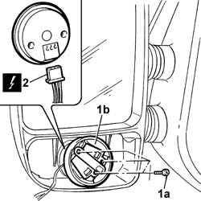

7005R58 EXTERIOR REAR VIEW MIRROR LOWER REFLECTOR ADJUSTMENT MOTOR (ONE) LEFT OR RIGHT - R.R.
- Path
- Procedures > 70 FITTINGS > 7005 PASSENGER COMPARTMENT FRONT SIDE DOORS > 7005R FRONT DOOR MIRRORS > 7005R58 EXTERIOR REAR VIEW MIRROR LOWER REFLECTOR ADJUSTMENT MOTOR (ONE) LEFT OR RIGHT - R.R.
- Kind
- repair procedure (removal / refitting; the operation number is the code)
- Applies to
- all engines; all production periods
- Interactive page
- https://sloeber94.github.io/elrnDB-fDct/en/#/244001462
Applies to: all engines; all production periods
 Removing
Removing
 Refitting
Refitting- Disconnect the negative battery terminal.
Op. 7005R56 ELECTRIC EXTERIOR REAR VIEW MIRROR LOWER REFLECTOR (ONE) LEFT OR RIGHT - R.R.
1. Undo the bolts (1a) fixing the lower reflector motor (1b).
2. Disconnect the electrical connector for the motor.

Applies to: all engines; all production periods
Refitting
Removing- Connect the electrical connector for the motor.
- Close the compartment housing the connectors using the special cover.
- Fasten the motor to the mirror tightening the fixing bolts.
Op. 7005R56 ELECTRIC EXTERIOR REAR VIEW MIRROR LOWER REFLECTOR (ONE) LEFT OR RIGHT - R.R.
- Connect the negative battery terminal.